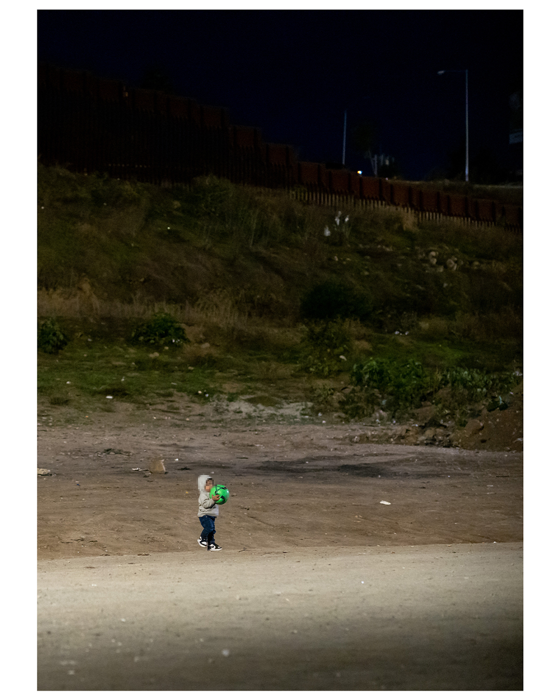

please excuse my appearance, i am under construction by busy volunteers!
Summary
Since September 7 2023, Border Patrol has been locking refugees in the space between the border walls and leaving them in the desert, then claiming that these folks are not being detained, so they have a justification for abandoning these people without food, water, shelter, medical care, or sanitation. Hundreds of people, including tiny babies, pregnant women, folks with injuries - everybody. People regularly die in these deserts, from thirst, injury, heatstroke, and hypothermia. Two Guinean migrants have died at one of the San Ysidro sites that Border Patrol restricts us from accessing under threat of arrest - without volunteers, there was no one there to call an ambulance. Even after these refugees have been processed, Border Patrol dumps them at random transit stations, with no clue of how to get to their sponsors, where to sleep - in a city that criminalizes homelessness - or sometimes which city they're in.
Local mutual aid organizations have stepped up to provide basic necessities to these trapped migrants. Most of us have day jobs and burn through our own tanks of $6/gallon California gas to drive down to San Ysidro or an hour east to Jacumba. We are funded solely through donations and our own spare cash - which is sparse, in a county as expensive as San Diego. Most of all, our volunteers are so, so tired - we have been running multiple support operations across the county for more than 12 hours of the day, every day, for the past 2.5 months, with no end in sight. It does not matter that this a Democratic state, city, presidency - all of them are doing NOTHING. Instead of helping, our city government has instead been busy filing amicus briefs pushing the Supreme Court to allow city officials to prosecute homeless people even further. All of this while our local conservative news station encourages its viewers to show up to our mutual aid stations and harrass us.
We desperately need help. We need donations, more volunteers, people to harangue government officials into doing *anything*. Even $5 helps - we're shopping at dollar stores and discount stores to make every cent stretch as far as possible through this state-manufactured humanitarian crisis.
People are still being held between Border Patrol’s 30-ft walls on the US/Mexico border in San Diego. Yesterday, families were dropped between the walls, and small children slept in the cold with nothing provided by agents—all blankets, food, and aid came from volunteers.
Despite the horror, children played.
One woman was traveling with her grandchildren. She had previously fallen from a shorter segment of wall, and reported unconsciousness immediately following the fall. She also reported ongoing pain.
Initially, it seemed she (prev post) would have to be separated from her grandchildren to receive medical attention, and her granddaughter wept afraid. Later, the family was transported together, but it’s unclear if the grandmother was treated.
Numerous people have fallen from the wall in the past month. Injuries have been debilitating. Despite the maiming, and despite a death in an open-air detention site, Border Patrol continues this inhumane policy.
Numerous people have fallen from the wall in the past month. Injuries have been debilitating. Despite the maiming, and despite a death in an open-air detention site, Border Patrol continues this inhumane policy.
I’m told that the agency is steadfast in its cruelty in Jacumba as well. Several volunteers have reported 800 or more asylum seekers held across the camps in the desert.

I’m told that the agency is steadfast in its cruelty in Jacumba as well. Several volunteers have reported 800 or more asylum seekers held across the camps in the desert.
Over nearly eighty days, CBP has chosen to direct its administrative and organizational apparatus toward suffering—it has developed a human and bureaucratic machine that produces wholly unnecessary suffering.